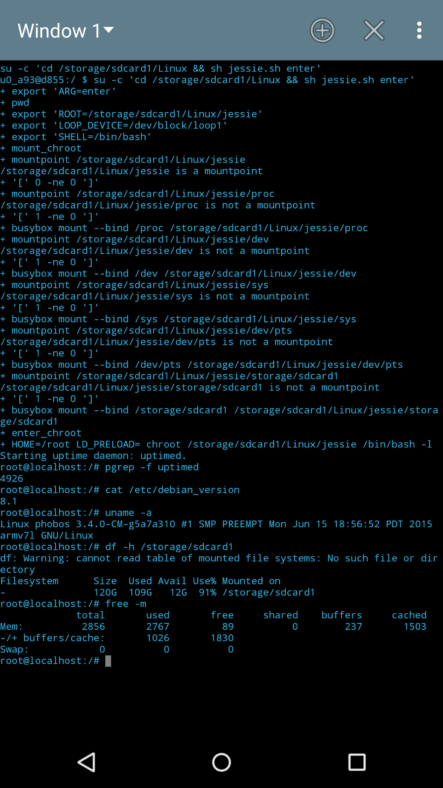

____ _ _ _
| _ \ ___| |__ _ __ ___ (_) __| |
| | | |/ _ \ '_ \| '__/ _ \| |/ _` |
| |_| | __/ |_) | | | (_) | | (_| |
|____/ \___|_.__/|_| \___/|_|\__,_|

sudo dnf install debootstrap # 5g dd if=/dev/zero of=jessie.img bs=$[ 1024 * 1024 ] \ count=$[ 1024 * 5 ] # Show used loop devices sudo losetup -f # Store the next free one to $loop loop=loopN sudo losetup /dev/$loop jessie.img mkdir jessie sudo mkfs.ext4 /dev/$loop sudo mount /dev/$loop jessie sudo debootstrap --foreign --variant=minbase \ --arch armel jessie jessie/ \ http://http.debian.net/debian sudo umount jessie
adb root && adb wait-for-device && adb shell
mkdir -p /storage/sdcard1/Linux/jessie
exit
# Sparse image problem, may be too big for copying otherwise
gzip jessie.img
# Copy over
adb push jessie.img.gz /storage/sdcard1/Linux/jessie.img.gz
adb shell
cd /storage/sdcard1/Linux
gunzip jessie.img.gz
# Show used loop devices
losetup -f
# Store the next free one to $loop
loop=loopN
# Use the next free one (replace the loop number)
losetup /dev/block/$loop $(pwd)/jessie.img
mount -t ext4 /dev/block/$loop $(pwd)/jessie
# Bind-Mound proc, dev, sys`
busybox mount --bind /proc $(pwd)/jessie/proc
busybox mount --bind /dev $(pwd)/jessie/dev
busybox mount --bind /dev/pts $(pwd)/jessie/dev/pts
busybox mount --bind /sys $(pwd)/jessie/sys
# Bind-Mound the rest of Android
mkdir -p $(pwd)/jessie/storage/sdcard{0,1}
busybox mount --bind /storage/emulated \
$(pwd)/jessie/storage/sdcard0
busybox mount --bind /storage/sdcard1 \
$(pwd)/jessie/storage/sdcard1
# Check mounts
mount | grep jessie
chroot $(pwd)/jessie /bin/bash -l export PATH=/bin:/usr/bin:/usr/local/bin:/sbin:/usr/sbin:/usr/local/sbin /debootstrap/debootstrap --second-stage exit # Leave chroot exit # Leave adb shell
# Install script jessie.sh adb push storage/sdcard1/Linux/jessie.sh /storage/sdcard/Linux/jessie.sh adb shell cd /storage/sdcard1/Linux sh jessie.sh enter # Bashrc cat <<END >~/.bashrc export PATH=/usr/local/sbin:/usr/local/bin:/usr/sbin:/usr/bin:/sbin:/bin:$PATH export EDITOR=vim hostname $(cat /etc/hostname) END # Fixing an error message while loading the profile sed -i s#id#/usr/bin/id# /etc/profile # Setting the hostname echo phobos > /etc/hostname echo 127.0.0.1 phobos > /etc/hosts hostname phobos # Apt-sources cat <<END > sources.list deb http://ftp.uk.debian.org/debian/ jessie main contrib non-free deb-src http://ftp.uk.debian.org/debian/ jessie main contrib non-free END apt-get update apt-get upgrade apt-get dist-upgrade exit # Exit chroot
sh jessie.sh enter # Setup example serice uptimed apt-get install uptimed cat <<END > /etc/rc.debroid export PATH=/usr/local/sbin:/usr/local/bin:/usr/sbin:/usr/bin:/sbin:/bin:$PATH service uptimed status &>/dev/null || service uptimed start exit 0 END chmod 0755 /etc/rc.debroid exit # Exit chroot exit # Exit adb shell
adb push data/local/userinit.sh /data/local/userinit.sh adb shell chmod +x /data/local/userinit.sh exit